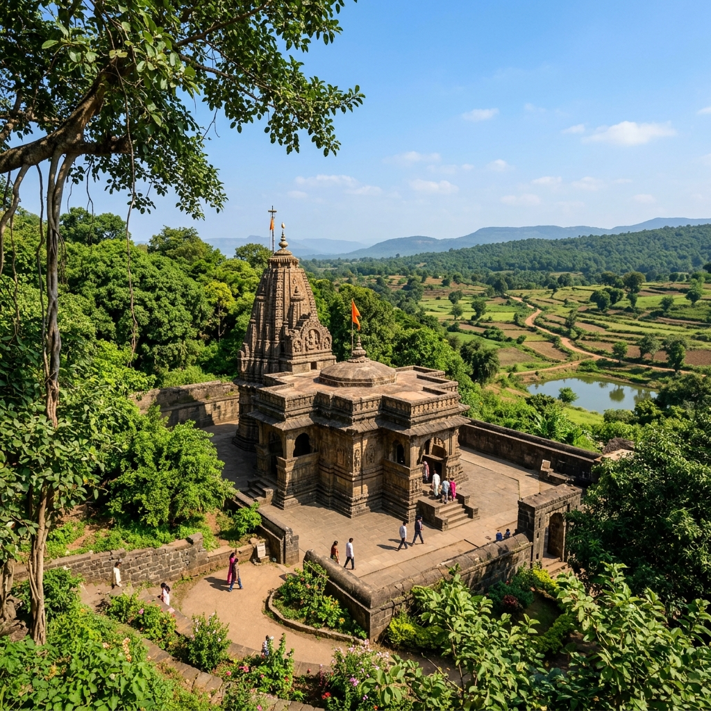
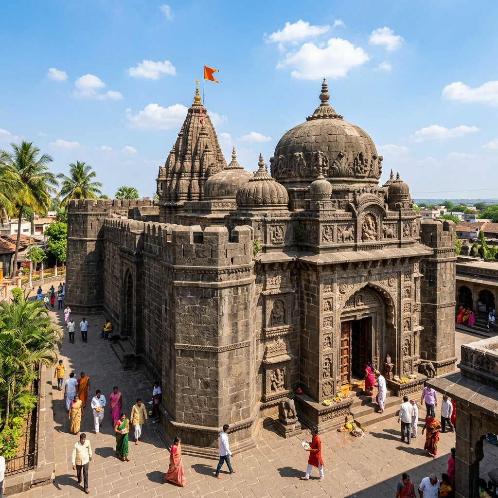
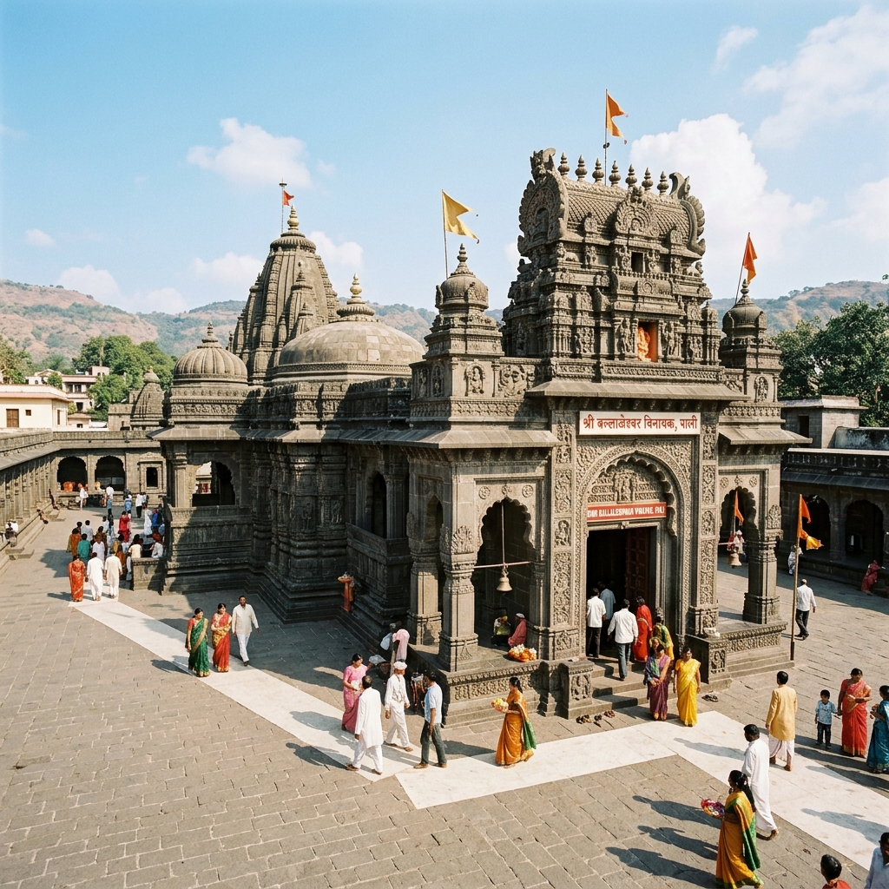
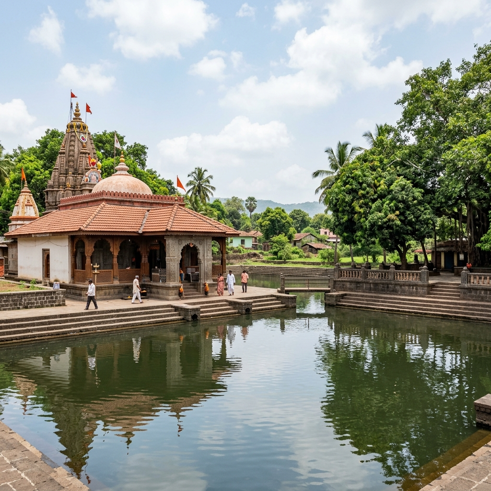

About Yatra
The Ashtavinayak refers to eight ancient temples of Lord Ganesha, each connected to a unique legend from Hindu mythology. These temples are spread across Pune and nearby regions in Maharashtra and are believed to be self-manifested (Swayambhu). The yatra traditionally starts and ends at Moreshwar Temple and has deep cultural and religious value.
Each temple has a different idol, story, structure, and setting. Some are in villages, some near hills, and others in peaceful countryside locations. The journey across all eight temples makes it a special spiritual road trip.
Temples
8 Self-Manifested
Tradition
Starts & Ends at Morgaon

Major Temples
Explore the unique legends and settings of key temples on the pilgrimage.




Travel Guide
Comprehensive travel options to complete the sacred pilgrimage.
Option 1: Direct Car / Cab (Recommended)
Driving or hiring a private cab is the best way to complete the yatra. It gives complete flexibility in route planning and timing. Most people start from Pune and easily complete the journey in 2 to 3 days.
Cost: ₹6,000 – ₹12,000 ApproxOption 2: Guided Tour Packages
Several tour operators and temple trusts offer 2-day or 3-day guided bus tours starting from Pune and Mumbai. This includes travel, food, and pre-booked accommodation.
Cost: ₹3,000 – ₹5,000 Per PersonOption 3: Public Transport
State transport (MSRTC) buses connect all major towns on the route. While budget-friendly, it takes longer and is less convenient for completing all eight temples in a single trip.
Cost: ₹800 – ₹1,500 ApproxEssential Information
Everything you need to plan a comfortable pilgrimage.
Stay & Food
Bhaktaniwas lodging run by temple trusts is available at Morgaon, Pali, and Ozar. Clean vegetarian food and traditional Maharashtrian prasad are widely available.
Entry & Cost
Temple entry is completely free. Special darshan or pooja options can be booked at the counters for a small fee. Main expenses are transport, stay, and food.
Best Time
October to March is ideal for comfortable travel. Monsoon (June-Sept) is beautiful and green, but roads can be rough. Summer is very hot and tiring.
Location & Coordinates
Pune District and surrounding areas, Maharashtra, India